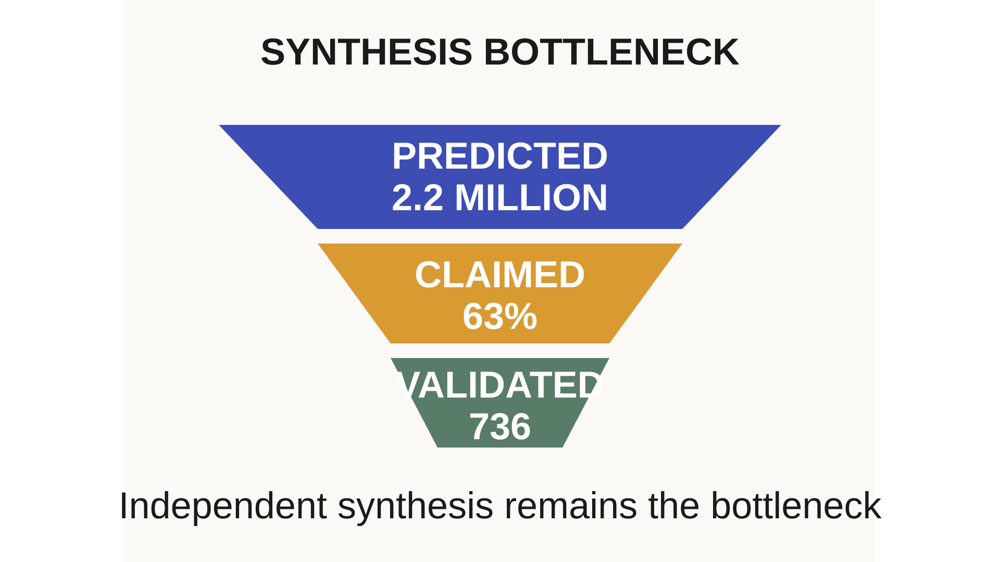
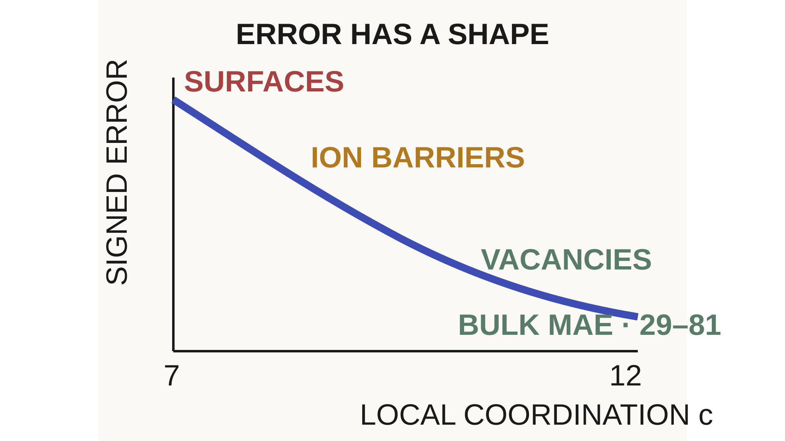
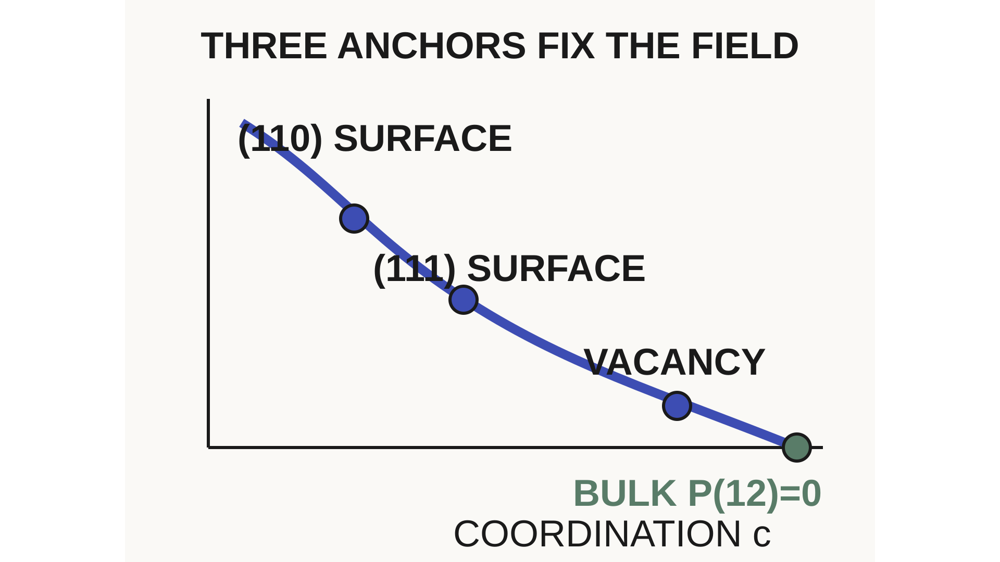
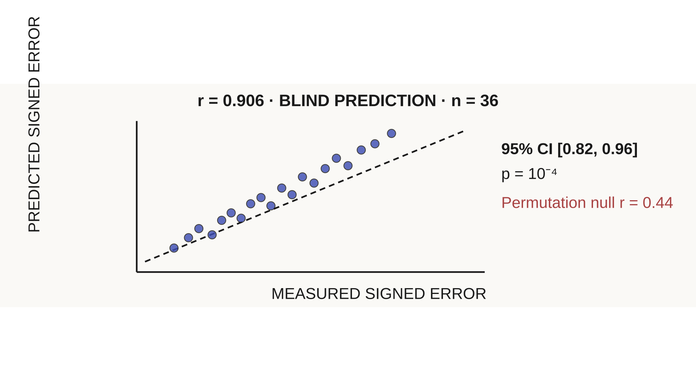

Prediction gap · 2023

2.2 million predicted.736 synthesized.

2.2M
Predicted crystal candidates
What if a bigger model is solving the wrong problem?
Under-coordination
Tidy bulk accuracy breaks where atoms have fewer neighbors.

Coordination · neighbor count
At vacancies, surfaces, and transition states, barrier errors can exceed 60%.
Measured field
Wrongness is not random.It has a shape.

P(c)
Measured environment error field
Coordination is neighbor count. No second neural net. No per-system retraining.
Blind evidence

r = 0.906
Predicted vs measured error
n = 36
Model × material combinations
Runtime correction
Flip the field. Add it beside the model.
RAW uMLIP
ENERGY
+
−ΣP(cᵢ)
MEASURED FIELD
CORRECTED
REFERENCE BAND
9.7% → 1.5%
NI SURFACE ERROR · BULK UNCHANGED
Analytic forces keep simulations physically consistent.
Proof boundary
A proof layer can say no.
813 < 813 · FALSE
26 OF 36 STRICTLY IMPROVE · 10⁻⁴ J/m²
Machine-checked claims expose the exact reason to stop.
Climate payoff
Under-coordinated defects control the work.
Not more confident predictions—measured corrections and certified boundaries.

Measure the error.Correct the field.Prove the boundary.
A Field, Not a Neural Net · Lupine Science
READ THE FULL ARTICLE · LUPINESCIENCE.COM
 Lupine Science
Lupine ScienceArticle video · Error geometry
A Field, Not a Neural Net
Measure the error. Correct the field. Prove the boundary.
FIELD NOTE · 01 / 07